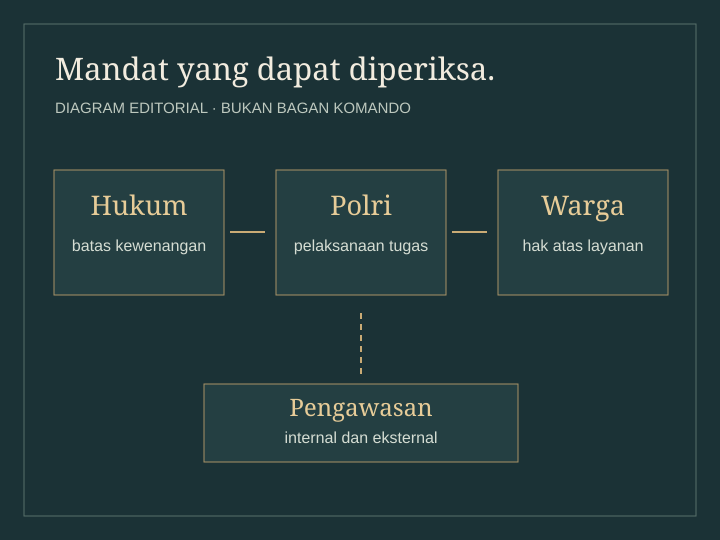

ARSIP / 01
SEJARAH KEPOLISIAN INDONESIA
UJIAN PANJANG
TRIBRATA:
MENGAPA SEJARAH ADALAH KUNCI MUTLAK REFORMASI POLRI MENUJU 2045?
Menelusuri perubahan institusi melalui arsip, dasar hukum, dan pengalaman warga.
Mulai perjalanan Lihat asal-usul koleksi 01 · FOTO ARSIP / ±1930Kantor polisi kolonial
01 · FOTO ARSIP / ±1930Kantor polisi kolonial
 02 · FOTO ARSIP / 1943Pendidikan pada masa pendudukan
02 · FOTO ARSIP / 1943Pendidikan pada masa pendudukan

03 · DIAGRAM EDITORIALMandat & pengawasan 04 · FOTO DOKUMENTER / 2016Polisi di ruang jalan
05 · FOTO DOKUMENTER / 2016Reformasi di ruang publik
04 · FOTO DOKUMENTER / 2016Polisi di ruang jalan
05 · FOTO DOKUMENTER / 2016Reformasi di ruang publik
01 / 05 GESER ATAU GUNAKAN PANAH
CATATAN KOLEKSISatu bingkai, satu pintu masuk.Pilih gambar untuk konteks, kredit, dan sumbernya.
015 BINGKAI · 3 FOTO DOKUMENTER
PILIH BINGKAI UNTUK MEMBACA KONTEKS
Sejarah sebuah institusi juga hidup dalam cara masyarakat diperlakukan.
CARA MEMBACA
Dokumen menjelaskan mandat. Arsip memperlihatkan konteks zamannya. Pengalaman warga menguji bagaimana layanan dijalankan.
Tentang pameranSEJARAH / RUANG 02
Lima babak.
Satu perjalanan kelembagaan.
Pilih periode untuk membaca peristiwa, konteks, dan dasar penelusurannya.
Baca sumber sejarahKOLEKSI / RUANG 03
Tiga cara membaca
sebuah mandat.
Buka satu objek untuk menghubungkan dasar hukum dengan hak warga.
Kredit visual & lisensiSampul dan diagram pada kartu ini adalah ilustrasi editorial. Naskah hukum asli ditautkan di dalam setiap objek.
LENSA REFORMASI / RUANG 04
Aturan dapat berubah.
Bagaimana kita menguji hasilnya?
Empat lensa berikut membantu membaca hubungan antara mandat, pengawasan, layanan, dan pengalaman masyarakat.
JEJAK BUKTI / RUANG 05
Satu pertanyaan.
Bukti yang bisa diperiksa.
Bedakan dokumen yang tersedia, data yang masih diperlukan, dan usulan penilaian.
Lihat status sumberDokumen atau kerangka tersediaData perlu ditelusuriUsulan pembelajaran
Status di sini menerangkan kelengkapan bahan pameran, bukan nilai kinerja Polri. Angka survei tanpa laporan asli tidak dipakai untuk menyimpulkan capaian.
SIMULASI LAYANAN / RUANG 06
Ikuti satu kasus.
Pahami hakmu dalam layanan.
Baca contoh proses, lihat jejak tindak lanjut, lalu nilai pengalaman warga dalam kasus fiktif.
BUKAN LAYANAN RESMI POLRI
Informasi yang perlu diketahui warga
Dalam setiap layanan, periksa persyaratan, tahapan, waktu, biaya, hasil layanan, serta cara mengajukan keberatan. Simpan bukti penerimaan dan mintalah penjelasan bila prosesnya tidak jelas.
Simulasi interaktif memerlukan JavaScript. Prinsip dan dasar pelayanan tetap dapat dibaca di perpustakaan sumber.
SIMULASI
01 / 04
EPILOG / 2026—2045
Perubahan membutuhkan
ukuran dan kesinambungan.
Peta jalan ini adalah usulan kuratorial untuk pembelajaran. Target, calon pelaksana, dan kebutuhan biaya belum merupakan keputusan atau anggaran pemerintah.
PRINSIP PELAKSANAAN
Ukur kondisi awal, uji pada unit percontohan, evaluasi secara independen, lalu perluas jika hasilnya terbukti.
Baca batas dan dasar usulanSUMBER / RUANG 07
Setiap cerita
punya jejak penelusuran.
Mulai dari dokumen utama berikut. Perpustakaan sumber memuat catatan pasal, provenance foto, dan status klaim yang masih perlu diperiksa.
UU Kepolisian
UU Nomor 2 Tahun 2002: kedudukan, tugas, kewenangan, dan batasnya.
Baca naskah resmi, membuka tab baruTAP MPR VI & VII
Dua ketetapan tahun 2000 tentang pemisahan dan peran TNI serta Polri.
Buka dokumen & catatanPelayanan publik
UU Nomor 25 Tahun 2009: komponen standar pelayanan dan pengaduan.
Baca naskah resmi, membuka tab baruCATATAN KETERBUKAAN
Informasi KTI berasal dari catatan penyusun. Naskah lengkap dan laporan asli sejumlah klaim kontemporer belum tersedia; batas ini dicatat secara terpisah dari sumber yang sudah dapat ditelusuri.
TENTANG PAMERAN
Sejarah untuk
percakapan yang terbuka.
The Living Archive adalah pameran pendidikan independen tentang sejarah kepolisian Indonesia dan akuntabilitas pelayanan publik. Pameran ini bukan situs resmi Polri.
Acuan narasi: “Ujian Panjang Tribrata: Mengapa Sejarah adalah Kunci Mutlak Reformasi Polri Menuju 2045?”, Qais Noor Sabian, SMAN 2 Taruna Bhayangkara, Banyuwangi, 2026; identitas naskah mengikuti informasi penyusun.
Metode, kredit, dan koreksi
Dokumen hukum, foto dokumenter, kajian sejarah, dan interpretasi editorial diberi keterangan sesuai jenisnya. Tanggal peninjauan editorial: .
Koreksi perlu menyebut bagian yang dipersoalkan, alasan koreksi, serta dokumen pendukung. Riwayat dan kebijakan peninjauan tersedia di perpustakaan sumber.
Metode & kebijakan koreksiSimulasi tidak meminta identitas, mengirim pengaduan, atau menyimpan jawaban setelah halaman dimuat ulang. Tidak ada pelacak pihak ketiga pada situs ini.